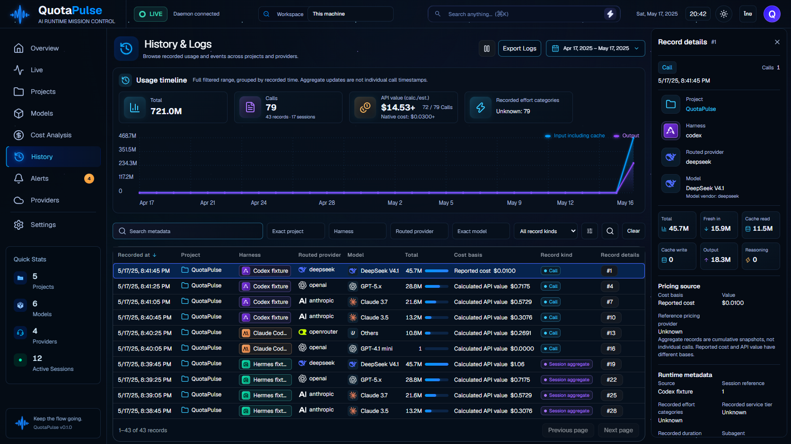
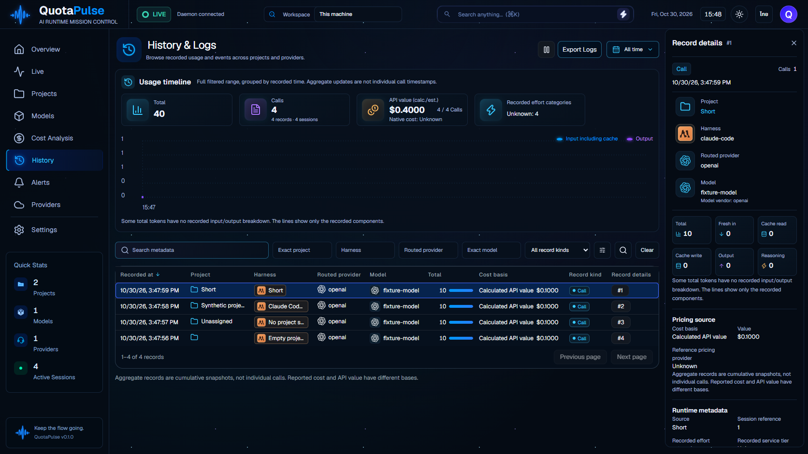

ภาพซ้ายคือ concept และภาพขวาคือแอปที่ใช้ข้อมูลจำลอง คลิกภาพเพื่อดูขนาดต้นฉบับ

ข้อมูลจำลองอีกชุดใช้ชื่อสั้น ชื่อยาว ชื่อว่าง และโปรเจกต์ที่ไม่ระบุ เพื่อตรวจการตัดข้อความและชื่อเต็ม

ภาพเทียบทั้งแปดหน้าจาก checkpoint ก่อนหน้า